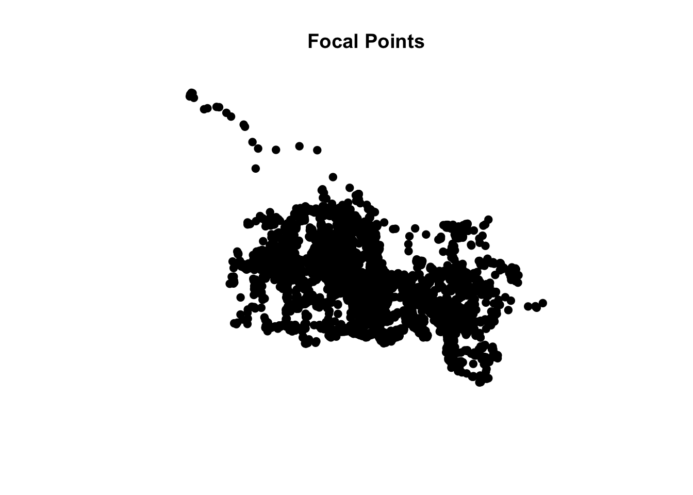
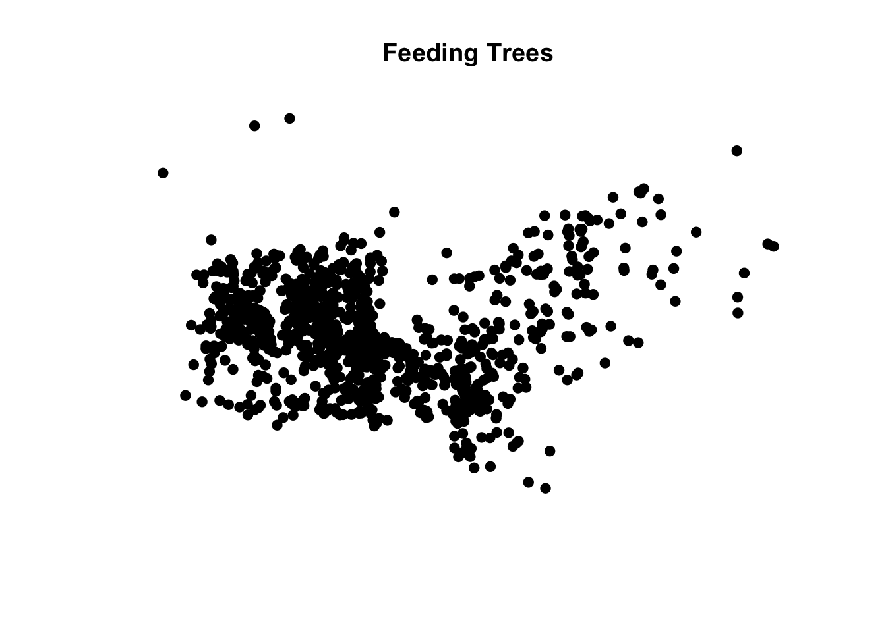
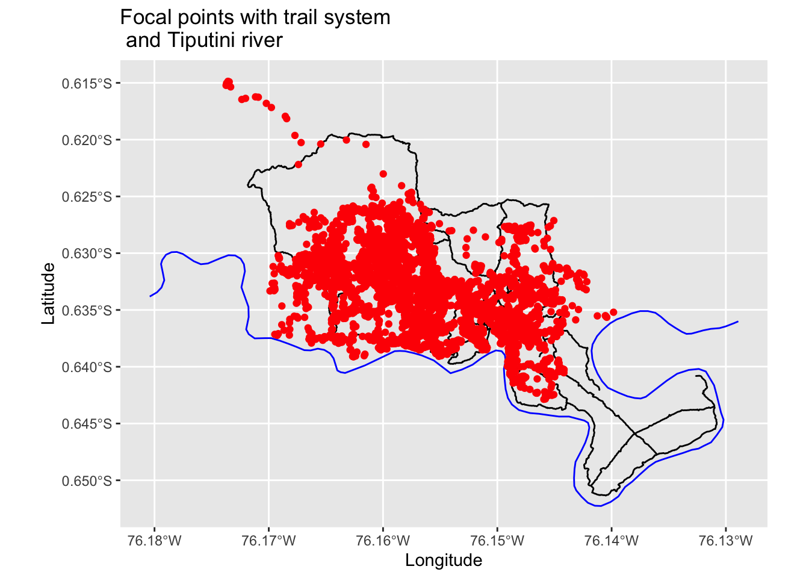

In recent years, affordable and accessible GPS units or GPS-enabled smartphones, watches, tablets, cameras, etc. have allowed for the recording of data with precise locations attached. This increase in the amount of available spatial data has been associated with an increase in demand for visualizations and analyses of such data, to exploit the richness of analysis that location affords.
Spatial data can be processed and analyzed using a geographic information system (GIS). There are several packages and software available capable of working with spatial data, but in many cases, data observations may not be independent or the relationship between variables may vary across geographical space. Thus standard statistical packages are often inadequate for analysis as they cannot account for the complexities of spatial processes and spatial data. Additionally, although standard GIS packages and software, such as the ESRI system of products, provide tools for the visualization of spatial data, their analytical capabilities are relatively limited and inflexible. Some R packages, on the other hand, are created by experts and innovators in the field of spatial data analysis and visualization, making R one of the best environments for spatial data analysis and manipulation. R can also be used to complement other mapping programs; for example, with visualizations completed in ArcMap followed by data analysis in R.
The sp format, as defined in the {sp} package, has been the dominant spatial data format in R for several years and provides an organized set of classes for storing spatial data. These classes (or sp objects) correspond to the three main types of vector data- data used to represent real world features in a GIS- points (i.e., “SpatialPoints”), lines (i.e., “SpatialLines”), and areas (i.e., “SpatialPolygons”). Tools drawn from a range of R packages, such as {maptools}, and {GISTools} are underpinned by the sp data format and used for spatial data analysis, allowing for a unified method for switching between packages. Currently, however, the R spatial community is in a period of transition from sp to the newer “simple features” or sf format.
“Simple features” refers to a formal standard that describes how objects in the real world can be represented, stored, and accessed, with emphasis on the spatial geometry of these objects. The standard is widely implemented in spatial databases (such as PostGIS) and is the basis for most of the newer R packages dealing with spatial data. A “feature” is thought of as a thing, or an object in the real world, that has a geometry (i.e., coordinates) describing where on Earth the feature is located. Just as objects in R often consist of other objects, a set of features can form a single feature. So, a tree can be a feature, a forest stand can be a feature, or an entire country can be a feature. There are many sf feature types, but the key ones again correspond to points (“Point”), lines (“Linestring”), and areas (“Polygon”). The {sf} package has a stronger theoretical structure than sp, with, for example, “multipoint” features being composed of single point features etc., yet many packages with spatial operations and functions for spatial analyses have not yet been updated to work with {sf}. Therefore, both the sp and sf formats are introduced here and used throughout this module, with conversion between the two occurring as needed.
In addition to a geometry, spatial data may also have any number of additional attributes, which describe other properties of a feature (e.g., population, length, area, etc.). The attributes associated with individual features (lines, points, and areas in vector data and cell values in raster data) provide the basis for spatial analyses and geographical investigation.
It is common for point data to come in tabular format rather than as an R spatial object (i.e., of class sp or sf format), so importing data for GIS analyses is often similar to importing data for other R analyses. As with non-spatial data, tabular datasets consisting of sets of features with geometries and attributes are the most useful structure for important and wrangling in R. In spatial data frames, each record (row) typically represents a single feature, while the fields (columns) describe the coordinates plus any variables or attributes associated with that feature.
For example, in this module we will work primarily with a dataset of the ranging patterns for a group of spider monkeys, Ateles belzebuth, at Tiputini Biodiversity Station from July 2010 through June 2012. Point data were originally collected at 15-minute intervals using handheld GPS units while performing behavioral focal follows on the individuals in a social group named MQ1. Let’s load some packages and import this dataset now:
## Rows: 8584 Columns: 7
## ── Column specification ────────────────────────────────────────────────────────
## Delimiter: ","
## chr (4): Date, OS, Focal, Composition
## dbl (2): Latitude, Longitude
## time (1): Time
##
## ℹ Use `spec()` to retrieve the full column specification for this data.
## ℹ Specify the column types or set `show_col_types = FALSE` to quiet this message.
As we can see, the dataset includes not only the focal point locations of the group given in latitude and longitude, but attributes including the subgroup composition, date and time of observation, and other details (the focal and/or observation number, observer, etc.) at each of those points.
28.2 Projections and Coordinate Reference Systems
In order to carry out spatial analyses, we want to convert this data frame to the sp or sf format. There are few ways to do this, but one of the most straightforward sequences, particularly if you need to re-project the geometry/coordinates, is the following:
Assign the coordinates for the spatial object
Assign the current projection of the coordinates
Transform from one coordinate reference system (CRS) to another, while converting to an sp object
If required, convert the sp object to sf using st_as_sf()
These steps are important because they allow us to define a common CRS, and project all data into the same geospatial extent. Coordinate reference systems are like measurement units for coordinates: they provide a standardized way of describing locations and specify to which location on Earth a particular coordinate pair refers. Coordinates can only be placed on the Earth’s surface when their CRS is known. In R, when data with different CRSs are combined, it is important to transform them to a common CRS so they align with one another and can be analyzed.
The CRS includes the projection, datum, ellipsoid, and unit components, and in R is described via the proj4string notation from a geospatial data processing library called PROJ4. The datum defines the origin and orientation of the coordinate axes, as well the size/shape of Earth, and always specifies the ellipsoid model that is used to characterize the globe (but the ellipsoid does not specify the datum)!
A particular CRS can be referenced by its EPSG code, which is an integer ID for a particular, known CRS that can be resolved into a proj4string representation. There are two general types of CRSs: - unprojected (or “Geographic”): e.g., Latitude/Longitude for referencing a location on the ellipsoid model of the Earth
projected: Easting/Northing distances for referencing the location on a particular 2D representation of the Earth
An elliptical Earth are thus projected onto a flat surface (e.g., a paper map). Map coordinates for a point are computed from their ellipsoidal latitude and longitude by a standard formula known as a map projection. But because it is impossible to flatten a round object without distortion, this results in trade-offs between area, direction, shape, and distance. There is no “best” projection, but some projections are better suited to different applications.
The Universal Transverse Mercator (UTM) projection, for example, is commonly used in research because it tends to be more locally accurate and has attributes that make estimating distance easy and accurate. Positions are described using Easting and Northing coordinates. The mercator projection preserves angles and direction, but distorts distance. To minimize this distortion, the UTM divides the Earth into sixty separate zones. The UTM zone for a location of interest can easily be found online. The points collected at TBS in Eastern Ecuador are mapped to UTM zone 18 South.
Now let’s convert our spider monkey data frame into an sp object. Our initial coordinates are given in latitude/longitude, but we want to transform this to a UTM projection as we’ll be mapping and analyzing points on a 2D surface. For this, we need to define the datum and projection. The World Geodetic System 1984 (WGS84) is defined and maintained by the United States National Geospatial-Intelligence Agency, and so is typically the default for US GPS systems. Therefore, the datum for our coordinate reference system is WGS84. Lastly, we’ll select meters as our units. Once we’ve projected, we can use the generic plot() function to see a spatial representation of our points.
# project and plot focal pointscrs_original <-"+proj=longlat +datum=WGS84"coordinates(d) <-c("Longitude", "Latitude") # x, y values represent the longitude and latitude, respectively and match the names of the fields in our original data tableproj4string(d) <-CRS(crs_original) #note that the data need to have an initial projection assigned in order to be transformed; here we know that our initial coordinates are in latitude-longitudecrs_target <-"+proj=utm +zone=18 + south +datum=WGS84 +units=m"d_sp <-spTransform(d, CRS(crs_target))d_sf <-st_as_sf(d_sp, CRS("+proj=utm +zone=18 + south +datum=WGS84 +units=m"))plot(d_sp, pch =19, main ="Focal Points")

We can also ask R to confirm that these points are indeed projected or examine a summary of our sp object.
is.projected(d_sp)
## [1] TRUE
summary(d_sp)
## Object of class SpatialPointsDataFrame
## Coordinates:
## min max
## coords.x1 369392 373165
## coords.x2 9928929 9932024
## Is projected: TRUE
## proj4string :
## [+proj=utm +zone=18 +south +datum=WGS84 +units=m +no_defs]
## Number of points: 8584
## Data attributes:
## Date Time OS Focal
## Length:8584 Length:8584 Length:8584 Length:8584
## Class :character Class1:hms Class :character Class :character
## Mode :character Class2:difftime Mode :character Mode :character
## Mode :numeric
## Composition
## Length:8584
## Class :character
## Mode :character
##
As with non-spatial data frames and tibbles, the data frame of these spatial objects can be accessed to examine, manipulate, or classify the attribute data or generate simple summaries. Here, we’ll add an attribute to our sp object for group size (defined here as the number of adult individuals in a subgroup at any given point) using our attribute for group composition, then generate a summary. For example, the mean group size across all our focal points is 5.33.
Now let’s try importing and projecting two other spatial datasets; the first lists the latitude-longitude locations of known spider monkey feeding trees through 2012 to correspond to the ranging dataset, and the second is the single point location for the Tiputini Biodiversity Station.
# point data for trees through 2012f <-"https://raw.githubusercontent.com/difiore/ada-2024-datasets/main/trees_2012.csv"trees <-read_csv(f, col_names =TRUE)
## Rows: 1124 Columns: 4
## ── Column specification ────────────────────────────────────────────────────────
## Delimiter: ","
## chr (1): LOCATION
## dbl (3): ID, FINAL_LON, FINAL_LAT
##
## ℹ Use `spec()` to retrieve the full column specification for this data.
## ℹ Specify the column types or set `show_col_types = FALSE` to quiet this message.
coordinates(trees) <-c("FINAL_LON", "FINAL_LAT")proj4string(trees) <-CRS("+proj=longlat +datum=WGS84")trees_sp <-spTransform(trees, CRS("+proj=utm +zone=18 + south +datum=WGS84 +units=m"))trees_sf <-st_as_sf(trees_sp, CRS("+proj=utm +zone=18 + south +datum=WGS84 +units=m"))plot(trees_sp, pch =19, main ="Feeding Trees")

# point data for TBS field stationf <-"https://raw.githubusercontent.com/difiore/ada-2024-datasets/main/TBS_coordinates.csv"station <-read_csv(f, col_names =TRUE)
## Rows: 1 Columns: 2
## ── Column specification ────────────────────────────────────────────────────────
## Delimiter: ","
## dbl (2): Latitude, Longitude
##
## ℹ Use `spec()` to retrieve the full column specification for this data.
## ℹ Specify the column types or set `show_col_types = FALSE` to quiet this message.
coordinates(station) <-c("Longitude", "Latitude")proj4string(station) <-CRS("+proj=longlat +datum=WGS84")station_sp <-spTransform(station, CRS("+proj=utm +zone=18 + south +datum=WGS84 +units=m"))station_sf <-st_as_sf(station_sp, CRS("+proj=utm +zone=18 + south +datum=WGS84 +units=m"))
Sometimes we’ll have spatial data in a data frame already provided in projected easting/northing coordinates. For example, here we import the point location of a mineral lick frequently used by the group. However, we still want to convert this to sp or sf format. To shake things up, let’s convert it first to sf, noting that we’ll use the “coords =” argument to designate which columns in our data frame are the coordinates, and the “crs =” argument to designate the projection. In this case, 32718 is the EPSG code which corresponds to UTM zone 18 south. Then we can also choose to convert from sf to sp using the as() function.
# point data for the mineral lickf <-"mineral_lick.csv"mineral_lick <-read_csv(f, col_names =TRUE)
## Rows: 1 Columns: 2
## ── Column specification ────────────────────────────────────────────────────────
## Delimiter: ","
## dbl (2): x_proj, y_proj
##
## ℹ Use `spec()` to retrieve the full column specification for this data.
## ℹ Specify the column types or set `show_col_types = FALSE` to quiet this message.
Often, data is provided (especially from online repositories) in ArcGIS shapefile format, rather than as a data table. A shapefile is a simple, nontopological format for storing the location and associated attributes of a geographic feature, which can be represented by points, lines, or areas. Once we’ve downloaded the shapefiles, there are a couple of options for loading them into R, as seen below. We will read in two shapefiles using the st_read() function from the {sf} package - the first for an outline of the country of Ecuador with coordinates already projected, the second for the TBS trail system which needs to be projected into UTM as we did for our points above.
# load shapefile for Ecuador, convert to sp/sff <-"ec_provinces.shp"ecuador <-st_read(f)
## Reading layer `ec_provinces' from data source
## `/Users/ad26693/Development/Repos/ada-2024/ec_provinces.shp'
## using driver `ESRI Shapefile'
## Simple feature collection with 163 features and 0 fields
## Geometry type: POLYGON
## Dimension: XY
## Bounding box: xmin: -168997.8 ymin: 9444903 xmax: 478793.8 ymax: 10161870
## CRS: NA
ecuador_sp <-as(ecuador, "Spatial")proj4string(ecuador_sp) <-CRS("+proj=utm +zone=18 + south +datum=WGS84 +units=m")ecuador_sf <-st_as_sf(ecuador_sp, CRS("+proj=utm +zone=18 + south +datum=WGS84 +units=m"))# Load and project shapefile for the TBS trail system, convert to sp/sff <-"trails.shp"trails <-st_read(f)
## Reading layer `trails' from data source
## `/Users/ad26693/Development/Repos/ada-2024/trails.shp' using driver `ESRI Shapefile'
## Simple feature collection with 29 features and 0 fields
## Geometry type: LINESTRING
## Dimension: XY
## Bounding box: xmin: -76.17184 ymin: -0.6513569 xmax: -76.1308 ymax: -0.6194494
## CRS: NA
trails_sp <-as(trails, "Spatial")proj4string(trails_sp) <-CRS("+proj=longlat +datum=WGS84")trails_sp <-spTransform(trails_sp, CRS("+proj=utm +zone=18 + south +datum=WGS84 +units=m"))trails_sf <-st_as_sf(trails_sp, CRS("+proj=utm +zone=18 + south +datum=WGS84 +units=m"))# load and project shapefile for the Tiputini River, convert to sp/sff <-"rio_tiputini.shp"rio <-st_read("rio_tiputini.shp")
## Reading layer `rio_tiputini' from data source
## `/Users/ad26693/Development/Repos/ada-2024/rio_tiputini.shp'
## using driver `ESRI Shapefile'
## Simple feature collection with 1 feature and 0 fields
## Geometry type: LINESTRING
## Dimension: XY
## Bounding box: xmin: -76.18041 ymin: -0.6522725 xmax: -76.12891 ymax: -0.6298922
## CRS: NA
rio_sp <-as(rio, "Spatial")proj4string(rio_sp) <-CRS("+proj=longlat +datum=WGS84")rio_sp <-spTransform(rio_sp, CRS("+proj=utm +zone=18 + south +datum=WGS84 +units=m"))rio_sf <-st_as_sf(rio_sp, CRS("+proj=utm +zone=18 + south +datum=WGS84 +units=m"))
28.3 Basic Plots
These shapefiles can be used to provide context for each other and for the spider monkey focal points and feeding tree locations we imported above. For example, the point for the field station has little meaning its own, but if we map it over the shapefile for Ecuador, we can visualize where in the country TBS is located. Or we can plot it over the trail and river shapefiles to see how these features are related to each other. Similarly, as we saw above, if we simply plot all the focal point locations of the spider monkey group or all of the feeding trees, this does not really provide much useful information. If we overlay those points on layers of data for the TBS trail system and river, however, suddenly this can inform where in relation to these features the group spends its time. Now we can make inferences about how the factors in these various layers might influence whether an observer is likely to see the group at a particular location. There are a couple of familiar options when making these basic maps. Here, we will use ggplot() to map sf objects.
# plot TBS point over Ecuador Shapefile and TBS point over trail and river# shapefiles using ggplot() and sf objectsp1 <-ggplot() +geom_sf(data = ecuador_sf) +geom_sf(data = rio_sf, color ="blue") +geom_sf(data = station_sf, color ="red") +xlab("Longitude") +ylab("Latitude") +ggtitle("TBS, Ecuador") +coord_sf(crs =32718)p2 <-ggplot() +geom_sf(data = trails_sf) +geom_sf(data = rio_sf, color ="blue") +geom_sf(data = station_sf, color ="red") +xlab("Longitude") +ylab("Latitude") +ggtitle("TBS trail system \n and Tiputini river") +coord_sf(crs =32718)cowplot::plot_grid(p1, p2, ncol =2)
# plot focal points over trail and river shapefilesp3 <-ggplot() +geom_sf(data = trails_sf) +geom_sf(data = rio_sf, color ="blue") +geom_sf(data = d_sf, color ="red") +xlab("Longitude") +ylab("Latitude") +ggtitle("Focal points with trail system \n and Tiputini river") +coord_sf(crs =32718)p3

28.4 Generating Home Ranges
Now that we’ve done some basic importing, projections, and mapping, let’s try some more interesting analyses. Across the primate order, there is extreme inter- and intra-specific variation in the size of home ranges and groups, and the distances groups travel per day. Additionally, the factors determining home range size and changes in home range use over time remain poorly understood for most primate species. We can estimate our spider monkey group’s home range from their focal point locations using a few different methods implemented with the {adehabitatHR} package, which accepts only sp format objects (not sf). The minimum convex polygon (MCP) is probably the most widely used of these methods, as it is quick and easy to compute from coordinate data. The mcp() function calculates the smallest convex polygon enclosing all the relocations (points) of the animal (or group); this polygon is then considered the home range.
# calculate home range area MCP methodpolygon <-mcp(d_sp, percent =100) #set to 100% to include all points
## Warning in mcp(d_sp, percent = 100): xy should contain only one column (the id
## of the animals), id ignored
plot(polygon, main ="Home Range, MCP method, 100%")
We can also exclude some points if we think they may be outliers and not accurately represent the group’s home range. We simply need to select the percentage of points we want to include.
polygon95 <-mcp(d_sp, percent =95)
## Warning in mcp(d_sp, percent = 95): xy should contain only one column (the id
## of the animals), id ignored
plot(polygon95, main ="Home Range, MCP method, 95%")
Although the MCP method is commonly used in the ecological literature, many researchers have stressed that the utilization distribution (UD) model is more appropriate. Under this model, the animals’ use of space can be described by a bivariate probability density function, the UD, which gives the probability density to relocate the animal at any place according to the coordinates (x, y) of this place. The function kernelUD(), also from the package {adehabitatHR}, implements this method to estimate the UD in each pixel of a grid superposed to the relocations. Next, the function getverticeshr() allows for home range estimation, because the home range is deduced from the UD as the minimum area on which the probability to relocate the animal is equal to a specified value. For example, the 95% home range corresponds to the smallest area on which the probability to relocate the animal is equal to 0.95.
# kernelUD methodhr_kernel <-kernelUD(d_sp)
## Warning in kernelUD(d_sp): xy should contain only one column (the id of the animals)
## id ignored
hr_kernel95 <-getverticeshr(hr_kernel, percent =95)plot(hr_kernel95, main ="Home Range, kernelUD method, 95%")
---title: "Intro to Spatial Data"author: "Sam Rettke and Tony Di Fiore"date: "2024-04-24"output: html_documenteditor_options: chunk_output_type: console---```{r}#| include: falseknitr::opts_chunk$set(echo =TRUE)```## BackgroundIn recent years, affordable and accessible GPS units or GPS-enabled smartphones, watches, tablets, cameras, etc. have allowed for the recording of data with precise locations attached. This increase in the amount of available spatial data has been associated with an increase in demand for visualizations and analyses of such data, to exploit the richness of analysis that location affords.Spatial data can be processed and analyzed using a geographic information system (GIS). There are several packages and software available capable of working with spatial data, but in many cases, data observations may not be independent or the relationship between variables may vary across geographical space. Thus standard statistical packages are often inadequate for analysis as they cannot account for the complexities of spatial processes and spatial data. Additionally, although standard GIS packages and software, such as the ESRI system of products, provide tools for the visualization of spatial data, their analytical capabilities are relatively limited and inflexible. Some R packages, on the other hand, are created by experts and innovators in the field of spatial data analysis and visualization, making R one of the best environments for spatial data analysis and manipulation. R can also be used to complement other mapping programs; for example, with visualizations completed in ArcMap followed by data analysis in R.The **sp** format, as defined in the {sp} package, has been the dominant spatial data format in ***R*** for several years and provides an organized set of classes for storing spatial data. These classes (or **sp** objects) correspond to the three main types of vector data- data used to represent real world features in a GIS- points (i.e., “SpatialPoints”), lines (i.e., “SpatialLines”), and areas (i.e., “SpatialPolygons”). Tools drawn from a range of ***R*** packages, such as {maptools}, and {GISTools} are underpinned by the **sp** data format and used for spatial data analysis, allowing for a unified method for switching between packages. Currently, however, the ***R*** spatial community is in a period of transition from **sp** to the newer "simple features" or **sf** format."Simple features" refers to a formal standard that describes how objects in the real world can be represented, stored, and accessed, with emphasis on the spatial geometry of these objects. The standard is widely implemented in spatial databases (such as PostGIS) and is the basis for most of the newer ***R*** packages dealing with spatial data. A "feature" is thought of as a thing, or an object in the real world, that has a geometry (i.e., coordinates) describing where on Earth the feature is located. Just as objects in ***R*** often consist of other objects, a set of features can form a single feature. So, a tree can be a feature, a forest stand can be a feature, or an entire country can be a feature. There are many **sf** feature types, but the key ones again correspond to points (“Point”), lines (“Linestring”), and areas (“Polygon”). The {sf} package has a stronger theoretical structure than **sp**, with, for example, "multipoint" features being composed of single point features etc., yet many packages with spatial operations and functions for spatial analyses have not yet been updated to work with {sf}. Therefore, both the **sp** and **sf** formats are introduced here and used throughout this module, with conversion between the two occurring as needed.In addition to a geometry, spatial data may also have any number of additional **attributes**, which describe other properties of a feature (e.g., population, length, area, etc.). The attributes associated with individual features (lines, points, and areas in vector data and cell values in raster data) provide the basis for spatial analyses and geographical investigation.It is common for point data to come in tabular format rather than as an ***R*** spatial object (i.e., of class **sp** or **sf** format), so importing data for GIS analyses is often similar to importing data for other ***R*** analyses. As with non-spatial data, tabular datasets consisting of sets of features with geometries and attributes are the most useful structure for important and wrangling in ***R***. In spatial data frames, each record (row) typically represents a single feature, while the fields (columns) describe the coordinates plus any variables or attributes associated with that feature.For example, in this module we will work primarily with a dataset of the ranging patterns for a group of spider monkeys, *Ateles belzebuth*, at Tiputini Biodiversity Station from July 2010 through June 2012. Point data were originally collected at 15-minute intervals using handheld GPS units while performing behavioral focal follows on the individuals in a social group named MQ1. Let’s load some packages and import this dataset now:```{r}easypackages::libraries("tidyverse", "sp", "sf", "cowplot", "tmap", "adehabitatHR")library(tidyverse)f <-"https://raw.githubusercontent.com/difiore/ada-2024-datasets/main/spider_monkeys.csv"d <-read_csv(f, col_names =TRUE)```As we can see, the dataset includes not only the focal point locations of the group given in latitude and longitude, but attributes including the subgroup composition, date and time of observation, and other details (the focal and/or observation number, observer, etc.) at each of those points.## Projections and Coordinate Reference SystemsIn order to carry out spatial analyses, we want to convert this data frame to the **sp** or **sf** format. There are few ways to do this, but one of the most straightforward sequences, particularly if you need to re-project the geometry/coordinates, is the following:- Assign the coordinates for the spatial object- Assign the current projection of the coordinates- Transform from one coordinate reference system (CRS) to another, while converting to an **sp** object- If required, convert the **sp** object to **sf** using `st_as_sf()`These steps are important because they allow us to define a common CRS, and project all data into the same geospatial extent. Coordinate reference systems are like measurement units for coordinates: they provide a standardized way of describing locations and specify to which location on Earth a particular coordinate pair refers. Coordinates can only be placed on the Earth’s surface when their CRS is known. In ***R***, when data with different CRSs are combined, it is important to transform them to a common CRS so they align with one another and can be analyzed.The CRS includes the **projection**, **datum**, **ellipsoid**, and **unit** components, and in ***R*** is described via the `proj4string` notation from a geospatial data processing library called PROJ4. The **datum** defines the origin and orientation of the coordinate axes, as well the size/shape of Earth, and always specifies the ellipsoid model that is used to characterize the globe (but the ellipsoid does not specify the datum)!A particular CRS can be referenced by its **EPSG** code, which is an integer ID for a particular, known CRS that can be resolved into a `proj4string` representation. There are two general types of CRSs: - unprojected (or "Geographic"): e.g., Latitude/Longitude for referencing a location on the ellipsoid model of the Earth- projected: Easting/Northing distances for referencing the location on a particular 2D representation of the EarthAn elliptical Earth are thus projected onto a flat surface (e.g., a paper map). Map coordinates for a point are computed from their ellipsoidal latitude and longitude by a standard formula known as a map projection. But because it is impossible to flatten a round object without distortion, this results in trade-offs between area, direction, shape, and distance. There is no "best" projection, but some projections are better suited to different applications.The Universal Transverse Mercator (UTM) projection, for example, is commonly used in research because it tends to be more locally accurate and has attributes that make estimating distance easy and accurate. Positions are described using Easting and Northing coordinates. The mercator projection preserves angles and direction, but distorts distance. To minimize this distortion, the UTM divides the Earth into sixty separate zones. The UTM zone for a location of interest can easily be found online. The points collected at TBS in Eastern Ecuador are mapped to UTM zone 18 South.Now let’s convert our spider monkey data frame into an **sp** object. Our initial coordinates are given in latitude/longitude, but we want to transform this to a UTM projection as we'll be mapping and analyzing points on a 2D surface. For this, we need to define the datum and projection. The World Geodetic System 1984 (WGS84) is defined and maintained by the United States National Geospatial-Intelligence Agency, and so is typically the default for US GPS systems. Therefore, the datum for our coordinate reference system is WGS84. Lastly, we'll select meters as our **units**. Once we've projected, we can use the generic `plot()` function to see a spatial representation of our points.```{r}# project and plot focal pointscrs_original <-"+proj=longlat +datum=WGS84"coordinates(d) <-c("Longitude", "Latitude") # x, y values represent the longitude and latitude, respectively and match the names of the fields in our original data tableproj4string(d) <-CRS(crs_original) #note that the data need to have an initial projection assigned in order to be transformed; here we know that our initial coordinates are in latitude-longitudecrs_target <-"+proj=utm +zone=18 + south +datum=WGS84 +units=m"d_sp <-spTransform(d, CRS(crs_target))d_sf <-st_as_sf(d_sp, CRS("+proj=utm +zone=18 + south +datum=WGS84 +units=m"))plot(d_sp, pch =19, main ="Focal Points")```We can also ask ***R*** to confirm that these points are indeed projected or examine a summary of our `sp` object.```{r}is.projected(d_sp)summary(d_sp)```As with non-spatial data frames and tibbles, the data frame of these spatial objects can be accessed to examine, manipulate, or classify the attribute data or generate simple summaries. Here, we’ll add an attribute to our `sp` object for group size (defined here as the number of adult individuals in a subgroup at any given point) using our attribute for group composition, then generate a summary. For example, the mean group size across all our focal points is 5.33.```{r}d_sp$Group_Size <-str_count(d_sp$Composition,"/")fivenum(d_sp$Group_Size)mean(d_sp$Group_Size)```Now let’s try importing and projecting two other spatial datasets; the first lists the latitude-longitude locations of known spider monkey feeding trees through 2012 to correspond to the ranging dataset, and the second is the single point location for the Tiputini Biodiversity Station.```{r}# point data for trees through 2012f <-"https://raw.githubusercontent.com/difiore/ada-2024-datasets/main/trees_2012.csv"trees <-read_csv(f, col_names =TRUE)head(trees)coordinates(trees) <-c("FINAL_LON", "FINAL_LAT")proj4string(trees) <-CRS("+proj=longlat +datum=WGS84")trees_sp <-spTransform(trees, CRS("+proj=utm +zone=18 + south +datum=WGS84 +units=m"))trees_sf <-st_as_sf(trees_sp, CRS("+proj=utm +zone=18 + south +datum=WGS84 +units=m"))plot(trees_sp, pch =19, main ="Feeding Trees")# point data for TBS field stationf <-"https://raw.githubusercontent.com/difiore/ada-2024-datasets/main/TBS_coordinates.csv"station <-read_csv(f, col_names =TRUE)coordinates(station) <-c("Longitude", "Latitude")proj4string(station) <-CRS("+proj=longlat +datum=WGS84")station_sp <-spTransform(station, CRS("+proj=utm +zone=18 + south +datum=WGS84 +units=m"))station_sf <-st_as_sf(station_sp, CRS("+proj=utm +zone=18 + south +datum=WGS84 +units=m"))```Sometimes we'll have spatial data in a data frame already provided in projected easting/northing coordinates. For example, here we import the point location of a mineral lick frequently used by the group. However, we still want to convert this to **sp** or **sf** format. To shake things up, let’s convert it first to **sf**, noting that we’ll use the "coords =" argument to designate which columns in our data frame are the coordinates, and the "crs = " argument to designate the projection. In this case, 32718 is the EPSG code which corresponds to UTM zone 18 south. Then we can also choose to convert from **sf** to **sp** using the `as()` function.```{r}# point data for the mineral lickf <-"mineral_lick.csv"mineral_lick <-read_csv(f, col_names =TRUE)head(mineral_lick)mineral_lick_sf <-st_as_sf(mineral_lick, coords =c("x_proj", "y_proj"), crs =32718)mineral_lick_sp <-as(mineral_lick_sf, "Spatial")```Often, data is provided (especially from online repositories) in ArcGIS shapefile format, rather than as a data table. A shapefile is a simple, nontopological format for storing the location and associated attributes of a geographic feature, which can be represented by points, lines, or areas. Once we’ve downloaded the shapefiles, there are a couple of options for loading them into ***R***, as seen below. We will read in two shapefiles using the `st_read()` function from the {sf} package - the first for an outline of the country of Ecuador with coordinates already projected, the second for the TBS trail system which needs to be projected into UTM as we did for our points above.```{r}# load shapefile for Ecuador, convert to sp/sff <-"ec_provinces.shp"ecuador <-st_read(f)ecuador_sp <-as(ecuador, "Spatial")proj4string(ecuador_sp) <-CRS("+proj=utm +zone=18 + south +datum=WGS84 +units=m")ecuador_sf <-st_as_sf(ecuador_sp, CRS("+proj=utm +zone=18 + south +datum=WGS84 +units=m"))#Load and project shapefile for the TBS trail system, convert to sp/sff <-"trails.shp"trails <-st_read(f)trails_sp <-as(trails, "Spatial")proj4string(trails_sp) <-CRS("+proj=longlat +datum=WGS84")trails_sp <-spTransform(trails_sp, CRS("+proj=utm +zone=18 + south +datum=WGS84 +units=m"))trails_sf <-st_as_sf(trails_sp, CRS("+proj=utm +zone=18 + south +datum=WGS84 +units=m"))# load and project shapefile for the Tiputini River, convert to sp/sff <-"rio_tiputini.shp"rio <-st_read("rio_tiputini.shp")rio_sp <-as(rio, "Spatial")proj4string(rio_sp) <-CRS("+proj=longlat +datum=WGS84")rio_sp <-spTransform(rio_sp, CRS("+proj=utm +zone=18 + south +datum=WGS84 +units=m"))rio_sf <-st_as_sf(rio_sp, CRS("+proj=utm +zone=18 + south +datum=WGS84 +units=m"))```## Basic PlotsThese shapefiles can be used to provide context for each other and for the spider monkey focal points and feeding tree locations we imported above. For example, the point for the field station has little meaning its own, but if we map it over the shapefile for Ecuador, we can visualize where in the country TBS is located. Or we can plot it over the trail and river shapefiles to see how these features are related to each other. Similarly, as we saw above, if we simply plot all the focal point locations of the spider monkey group or all of the feeding trees, this does not really provide much useful information. If we overlay those points on layers of data for the TBS trail system and river, however, suddenly this can inform where in relation to these features the group spends its time. Now we can make inferences about how the factors in these various layers might influence whether an observer is likely to see the group at a particular location. There are a couple of familiar options when making these basic maps. Here, we will use `ggplot()` to map `sf` objects.```{r}# plot TBS point over Ecuador Shapefile and TBS point over trail and river shapefiles using ggplot() and sf objectsp1 <-ggplot() +geom_sf(data = ecuador_sf) +geom_sf(data = rio_sf, color ="blue") +geom_sf(data = station_sf, color ="red") +xlab("Longitude") +ylab("Latitude") +ggtitle("TBS, Ecuador") +coord_sf(crs =32718)p2 <-ggplot() +geom_sf(data = trails_sf) +geom_sf(data = rio_sf, color ="blue") +geom_sf(data = station_sf, color ="red") +xlab("Longitude") +ylab("Latitude") +ggtitle("TBS trail system \n and Tiputini river") +coord_sf(crs =32718)cowplot::plot_grid(p1, p2, ncol =2)# plot focal points over trail and river shapefilesp3 <-ggplot() +geom_sf(data = trails_sf) +geom_sf(data = rio_sf, color ="blue") +geom_sf(data = d_sf, color ="red") +xlab("Longitude") +ylab("Latitude") +ggtitle("Focal points with trail system \n and Tiputini river") +coord_sf(crs =32718)p3```## Generating Home RangesNow that we've done some basic importing, projections, and mapping, let’s try some more interesting analyses. Across the primate order, there is extreme inter- and intra-specific variation in the size of home ranges and groups, and the distances groups travel per day. Additionally, the factors determining home range size and changes in home range use over time remain poorly understood for most primate species. We can estimate our spider monkey group’s home range from their focal point locations using a few different methods implemented with the {adehabitatHR} package, which accepts only `sp` format objects (not `sf`). The minimum convex polygon (MCP) is probably the most widely used of these methods, as it is quick and easy to compute from coordinate data. The `mcp()` function calculates the smallest convex polygon enclosing all the relocations (points) of the animal (or group); this polygon is then considered the home range.```{r}# calculate home range area# MCP methodpolygon <-mcp(d_sp, percent =100) #set to 100% to include all pointsplot(polygon, main ="Home Range, MCP method, 100%")# orggplot(st_as_sf(polygon)) +geom_sf(alpha =0.5)```We can also exclude some points if we think they may be outliers and not accurately represent the group's home range. We simply need to select the percentage of points we want to include.```{r}polygon95 <-mcp(d_sp, percent =95)plot(polygon95, main ="Home Range, MCP method, 95%")# orggplot(st_as_sf(polygon95)) +geom_sf(alpha =0.5)```Although the MCP method is commonly used in the ecological literature, many researchers have stressed that the utilization distribution (UD) model is more appropriate. Under this model, the animals’ use of space can be described by a bivariate probability density function, the UD, which gives the probability density to relocate the animal at any place according to the coordinates (x, y) of this place. The function `kernelUD()`, also from the package {adehabitatHR}, implements this method to estimate the UD in each pixel of a grid superposed to the relocations. Next, the function `getverticeshr()` allows for home range estimation, because the home range is deduced from the UD as the minimum area on which the probability to relocate the animal is equal to a specified value. For example, the 95% home range corresponds to the smallest area on which the probability to relocate the animal is equal to 0.95.```{r}# kernelUD methodhr_kernel <-kernelUD(d_sp)hr_kernel95 <-getverticeshr(hr_kernel, percent =95)plot(hr_kernel95, main ="Home Range, kernelUD method, 95%")# orggplot(st_as_sf(hr_kernel95)) +geom_sf(alpha =0.5) +geom_sf(data =st_as_sf(d_sp), aes(geometry = geometry), alpha =0.3)```